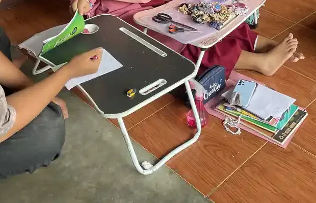

Daftar Isi
- Dulu dan sekarang: istilah yang dipakai
- Apa itu tunagrahita atau disabilitas intelektual
- Apa itu autisme
- Tabel perbedaan tunagrahita dan autis
- Mengapa keduanya sering tertukar
- Bisa terjadi bersamaan: apa kata data
- Bagaimana profesional membedakannya
- Dampaknya pada layanan belajar
- Langkah untuk orang tua dan guru
- Pertanyaan yang sering diajukan
Banyak orang tua datang ke YUKA dengan pertanyaan yang sama: anak saya tunagrahita atau autis? Pertanyaan ini wajar. Di lingkungan sekitar, dua istilah itu sering dipakai bergantian, padahal maknanya berbeda. Ada juga yang mengira autisme selalu berarti kecerdasan rendah, atau sebaliknya, setiap anak yang lambat belajar pasti autis. Kedua anggapan itu keliru.
Artikel ini menjelaskan perbedaan keduanya dengan bahasa sederhana, merujuk pada sumber resmi: buku pedoman diagnosis psikiatri Amerika (DSM-5-TR) melalui penjelasan American Psychiatric Association, klasifikasi penyakit WHO (ICD-11), data surveilans CDC, Undang-Undang Penyandang Disabilitas, serta panduan pendidikan inklusif Kemendikbudristek. Tujuannya membantu Anda memahami istilah dan tahu kapan perlu meminta asesmen, bukan menggantikan pemeriksaan.
Dulu dan sekarang: istilah yang dipakai
Sebelum membahas perbedaannya, ada baiknya kita sepakat soal istilah. Bahasa yang kita pakai memengaruhi cara orang memandang anak. Istilah yang tepat juga memudahkan orang tua berbicara dengan dokter, psikolog, dan sekolah.
Tunagrahita adalah istilah pendidikan yang sudah lama dipakai di Indonesia. Panduan Pelaksanaan Pendidikan Inklusif Kemendikbudristek (2021) mencatat bahwa regulasi pendidikan menyebut penyandang disabilitas intelektual dengan istilah tunagrahita, dan di bagian lain panduan itu memakai frasa peserta didik berkebutuhan khusus dengan hambatan intelektual. Data pendidikan nasional pun masih memakai istilah ini: referensi Dapodik Kemendikdasmen memiliki kategori terpisah untuk "Tuna Grahita Ringan", "Tuna Grahita Sedang", dan "Autis".
Dalam hukum, UU Nomor 8 Tahun 2016 tentang Penyandang Disabilitas memakai istilah penyandang disabilitas intelektual. Penjelasan Pasal 4 menyebutnya sebagai "terganggunya fungsi pikir karena tingkat kecerdasan di bawah rata-rata, antara lain lambat belajar, disabilitas grahita dan down syndrom". Undang-undang ini berstatus berlaku menurut JDIH BPK.
Dalam dunia medis, American Psychiatric Association menjelaskan bahwa DSM-5 memakai istilah intellectual disability (intellectual developmental disorder) untuk menggantikan istilah lama mental retardation atau retardasi mental. ICD-11 milik WHO memakai nama disorders of intellectual development. Istilah retardasi mental sebaiknya tidak dipakai lagi karena terdengar merendahkan dan sudah ditinggalkan oleh pedoman resmi.
Untuk autisme, UU 8/2016 menempatkannya di bawah disabilitas mental, tepatnya "disabilitas perkembangan yang berpengaruh pada kemampuan interaksi sosial di antaranya autis dan hiperaktif". Jadi, di mata hukum Indonesia pun, disabilitas intelektual dan autisme adalah dua ragam disabilitas yang berbeda.
| Konteks | Istilah untuk tunagrahita | Istilah untuk autisme |
|---|---|---|
| Hukum (UU 8/2016) | Penyandang disabilitas intelektual | Disabilitas mental, kelompok disabilitas perkembangan (autis) |
| Pendidikan (Kemendikbudristek, Dapodik) | Tunagrahita, hambatan intelektual | Autis, autisme |
| Medis (DSM-5-TR) | Intellectual disability (intellectual developmental disorder) | Autism spectrum disorder (gangguan spektrum autisme) |
| Medis (WHO ICD-11) | Disorders of intellectual development, kode 6A00 | Autism spectrum disorder, kode 6A02 |
| Istilah lama yang sebaiknya dihindari | Retardasi mental, idiot, "anak bodoh" | "Anak yang hidup di dunianya sendiri" sebagai label |
Di artikel ini kami memakai "tunagrahita" dan "disabilitas intelektual" secara bergantian karena keduanya dikenal pembaca. Kami juga memakai "anak autis" atau "anak dengan autisme". Sebagian keluarga lebih nyaman dengan salah satunya, dan pilihan keluarga perlu dihormati.
Apa itu tunagrahita atau disabilitas intelektual
American Psychiatric Association menjelaskan disabilitas intelektual sebagai kondisi perkembangan saraf yang memengaruhi dua area: fungsi kognitif, seperti belajar, memecahkan masalah, dan menilai sesuatu, serta fungsi adaptif, yaitu kemampuan menjalani kegiatan sehari-hari seperti berkomunikasi dan ikut serta dalam kehidupan sosial. Hambatan ini dimulai pada masa perkembangan, umumnya sebelum usia 18 tahun untuk keperluan diagnosis. AAIDD, asosiasi profesional di bidang ini, memakai batas usia 22 tahun.
Fungsi adaptif dibagi menjadi tiga ranah. Menurut lembar fakta DSM-5 dari APA, ranah konseptual mencakup bahasa, membaca, menulis, berhitung, bernalar, dan mengingat. Ranah sosial mencakup empati, penilaian sosial, kemampuan berkomunikasi, serta menjalin dan mempertahankan pertemanan. Ranah praktis mencakup merawat diri, mengelola uang, rekreasi, dan mengatur tugas sekolah atau pekerjaan.
Satu hal penting: tingkat keparahan disabilitas intelektual tidak ditentukan oleh skor IQ semata. APA menegaskan bahwa DSM-5 menilai keparahan dari fungsi adaptif, walau tes kecerdasan tetap dipakai. Secara umum, disabilitas intelektual berada sekitar dua simpangan baku atau lebih di bawah rata-rata populasi, setara skor IQ sekitar 70 atau lebih rendah. ICD-11 (kode 6A00) memakai patokan yang sama, yaitu fungsi intelektual dan perilaku adaptif kira-kira di bawah persentil 2,3, diukur dengan tes standar yang dilakukan secara perorangan. ICD-11 membagi tingkatnya menjadi ringan, sedang, berat, dan sangat berat. Penjelasan rinci tentang tingkat ini ada di artikel tunagrahita ringan, sedang, dan berat.
Dalam kehidupan sehari-hari, anak dengan disabilitas intelektual mungkin butuh waktu lebih lama untuk memahami konsep baru, mengikuti instruksi bertahap, atau mengerjakan tugas mandiri seperti berpakaian dan berbelanja. Namun banyak di antara mereka yang ramah, senang bergaul, dan bisa belajar banyak hal dengan dukungan yang tepat. Gambaran umum dan pendidikan yang sesuai dibahas di panduan tunagrahita dan disabilitas intelektual: pengertian, dukungan, dan hak.

Apa itu autisme
Kemenkes melalui laman Ayo Sehat menjelaskan autisme sebagai gangguan perkembangan neurologis yang memengaruhi interaksi sosial, komunikasi, dan perilaku. American Psychiatric Association menggambarkan gangguan spektrum autisme sebagai kondisi perkembangan yang kompleks, dengan tantangan menetap pada komunikasi sosial, minat yang terbatas, dan perilaku berulang. Kebutuhan dukungannya berbeda-beda pada setiap orang.
ICD-11 (kode 6A02) merumuskan dua kelompok ciri utama. Pertama, kesulitan yang menetap dalam memulai dan mempertahankan interaksi sosial timbal balik serta komunikasi sosial. Kedua, pola perilaku, minat, atau aktivitas yang terbatas, berulang, dan kaku, yang jelas tidak lazim untuk usia dan konteks budaya anak. Gejala muncul pada masa perkembangan, biasanya di masa kanak-kanak awal, tetapi bisa baru tampak jelas ketika tuntutan sosial melebihi kemampuan anak. Lembar fakta DSM-5 tentang autisme juga menyebut hal serupa: gejala harus ada sejak masa kanak-kanak awal walau mungkin baru dikenali belakangan.
Bagian yang paling relevan dengan pembahasan kita: ICD-11 menyatakan bahwa orang di spektrum autisme menunjukkan seluruh rentang kemampuan intelektual dan bahasa. WHO menegaskan hal yang sama dalam lembar faktanya, bahwa tingkat fungsi intelektual orang autis sangat beragam, mulai dari hambatan berat sampai tingkat di atas rata-rata. Artinya, autisme bukan ukuran kecerdasan.
Dalam keseharian, anak autis mungkin jarang menatap mata atau menunjuk untuk berbagi perhatian, sulit memahami giliran bicara, sangat terikat pada rutinitas, atau sangat peka terhadap suara, cahaya, dan tekstur. Panduan inklusif Kemendikbudristek juga menyebut kesulitan berkomunikasi, mengulang kata, dan kesulitan bersosialisasi sebagai pola yang sering tampak di sekolah. Penjelasan lengkap ada di panduan autisme dan tingkat dukungan autisme level 1, 2, dan 3.
Tabel perbedaan tunagrahita dan autis
Tabel berikut merangkum perbedaan utama menurut sumber resmi di atas. Gunakan sebagai bahan memahami istilah, bukan daftar periksa untuk menilai anak sendiri.
| Aspek | Tunagrahita (disabilitas intelektual) | Autisme (gangguan spektrum autisme) |
|---|---|---|
| Inti kondisi | Keterbatasan fungsi intelektual dan fungsi adaptif | Perbedaan komunikasi dan interaksi sosial, plus perilaku atau minat terbatas dan berulang |
| Kemampuan intelektual | Di bawah rata-rata, sekitar dua simpangan baku atau lebih di bawah rata-rata populasi | Sangat beragam, dari hambatan berat sampai di atas rata-rata |
| Interaksi sosial | Minat bergaul umumnya ada; kesulitan sosial lebih terkait pemahaman situasi | Kesulitan khas dalam interaksi timbal balik, isyarat nonverbal, dan menjalin hubungan |
| Pola perilaku berulang dan minat terbatas | Bukan ciri utama | Ciri utama yang wajib ada untuk diagnosis |
| Kepekaan sensorik | Bukan ciri utama | Sering ada, misalnya terlalu peka atau kurang peka terhadap suara dan sentuhan |
| Cara menilai keparahan | Dari fungsi adaptif pada ranah konseptual, sosial, dan praktis | Dari tingkat dukungan yang dibutuhkan pada komunikasi sosial dan perilaku |
| Kode WHO ICD-11 | 6A00 | 6A02, dengan subkode tersendiri untuk autisme dengan atau tanpa gangguan perkembangan intelektual |
| Ragam disabilitas menurut UU 8/2016 | Disabilitas intelektual | Disabilitas mental (disabilitas perkembangan) |
| Penekanan dukungan belajar | Penyesuaian tujuan, materi, dan langkah belajar; keterampilan hidup sehari-hari | Dukungan komunikasi, jadwal yang terduga, penyesuaian sensorik, dan latihan sosial |
Perhatikan baris kedua dan ketiga. Di situlah inti perbedaannya. Pada tunagrahita, hambatan utama ada pada kemampuan berpikir dan kemandirian secara umum. Pada autisme, hambatan utama ada pada cara anak berkomunikasi dan berhubungan dengan orang lain, terlepas dari tingkat kecerdasannya.

Mengapa keduanya sering tertukar
Ada beberapa alasan mengapa orang tua, bahkan guru, sering sulit membedakan keduanya.
- Tanda awal yang mirip. Pada usia balita, bicara terlambat, belum merespons instruksi, atau tertinggal dari teman sebaya bisa muncul pada keduanya. Tanda ini juga bisa muncul pada keterlambatan perkembangan umum, seperti dibahas di apakah GDD sama dengan autis.
- Kesulitan sosial ada pada keduanya, tetapi berbeda sumbernya. Anak dengan disabilitas intelektual bisa kesulitan memahami aturan main atau lelucon karena pemahaman umumnya terbatas. Anak autis bisa paham aturannya tetapi kesulitan membaca isyarat sosial dan menjalin interaksi timbal balik.
- Keduanya bisa terjadi bersamaan. Ketika satu anak mengalami keduanya, ciri-cirinya bercampur dan sulit dipisahkan tanpa asesmen menyeluruh.
- Tes yang tidak sesuai. Anak autis yang belum bisa bicara atau sulit mengikuti instruksi tes bisa mendapat skor rendah, padahal kemampuan sebenarnya belum terukur. Karena itu pemilihan alat tes dan cara pengujian perlu disesuaikan oleh profesional.
- Penggunaan istilah sehari-hari. Kata "autis" kadang dipakai sembarangan untuk menyebut siapa saja yang pendiam atau asyik sendiri. Pemakaian seperti ini mengaburkan arti sebenarnya.
Karena alasan-alasan itu, jangan mengandalkan satu ciri saja. Seorang anak yang belum bisa bicara pada usia tiga tahun bisa autis, bisa mengalami disabilitas intelektual, bisa mengalami keduanya, atau bisa mengalami hal lain seperti gangguan pendengaran atau keterlambatan bicara. Yang membedakan adalah gambaran keseluruhan, dan gambaran itu hanya bisa disusun lewat asesmen.
Bisa terjadi bersamaan: apa kata data
Pertanyaan "tunagrahita atau autis?" sering kali kurang tepat, karena jawabannya bisa "keduanya". APA mencatat bahwa disabilitas intelektual sering muncul bersama kondisi lain, termasuk ADHD dan gangguan spektrum autisme. Sebaliknya, APA juga menyebut anak autis lebih mungkin mengalami disabilitas intelektual dibanding anak yang tidak autis.
Data paling baru datang dari laporan surveilans CDC yang terbit tahun 2025. Jaringan pemantauan autisme CDC memeriksa catatan anak usia 8 tahun di 16 wilayah Amerika Serikat pada tahun 2022 dan menemukan prevalensi autisme sekitar 1 dari 31 anak. Dari 5.292 anak autis yang memiliki data tes kognitif, hasilnya terbagi seperti tabel berikut.
| Kelompok kemampuan kognitif (anak autis usia 8 tahun, data 2022) | Persentase |
|---|---|
| Tergolong disabilitas intelektual (IQ 70 atau lebih rendah) | 39,6% |
| Rentang batas (IQ 71 sampai 85) | 24,2% |
| Rentang rata-rata atau lebih tinggi (IQ di atas 85) | 36,1% |
Angka ini menunjukkan dua hal sekaligus. Pertama, cukup banyak anak autis yang juga mengalami disabilitas intelektual, sekitar 4 dari 10 dalam data tersebut. Kedua, lebih banyak lagi yang tidak, karena sekitar 6 dari 10 berada di rentang batas atau rata-rata ke atas. Data ini berasal dari Amerika Serikat dan tidak bisa langsung dipakai untuk menggambarkan anak di Indonesia, tetapi cukup jelas untuk mematahkan anggapan bahwa autisme selalu berarti kecerdasan rendah.
Klasifikasi WHO ICD-11 juga mencerminkan kenyataan ini. Kode autisme dibagi menurut ada tidaknya gangguan perkembangan intelektual dan menurut kemampuan bahasa fungsional, misalnya "autisme tanpa gangguan perkembangan intelektual dengan hambatan bahasa ringan atau tanpa hambatan" dan "autisme dengan gangguan perkembangan intelektual dan hambatan bahasa fungsional". Dengan kata lain, sejak awal pedoman WHO menganggap keduanya perlu dinilai terpisah.
Hukum Indonesia sejalan dengan ini. Pasal 4 ayat (2) UU 8/2016 menyatakan ragam disabilitas "dapat dialami secara tunggal, ganda, atau multi dalam jangka waktu lama yang ditetapkan oleh tenaga medis". Anak yang mengalami disabilitas intelektual sekaligus autisme berhak atas dukungan untuk kedua kebutuhannya.

Bagaimana profesional membedakannya
Membedakan tunagrahita dan autisme adalah pekerjaan tim profesional, bukan hasil satu tes atau satu kunjungan. Secara umum, ada beberapa hal yang dinilai.
Riwayat perkembangan
Profesional akan menanyakan kapan anak mulai tengkurap, berjalan, mengoceh, dan berbicara, serta bagaimana anak berinteraksi sejak bayi. Apakah anak menoleh saat dipanggil, menunjuk untuk menunjukkan sesuatu, atau membalas senyum? Catatan seperti ini membantu membedakan keterlambatan yang merata di semua area dari pola khas pada komunikasi sosial.
Pengamatan perilaku dan komunikasi sosial
Autisme dinilai dari pengamatan langsung dan wawancara terstruktur tentang komunikasi sosial serta perilaku berulang. APA menyebut tanda awal autisme sering pertama kali dilihat oleh orang tua. Profesional lalu mencocokkannya dengan kriteria DSM-5-TR atau ICD-11.
Tes kecerdasan dan fungsi adaptif
Disabilitas intelektual dinilai dengan dua alat sekaligus. APA menekankan perlunya penilaian klinis dan tes kecerdasan standar, dengan tingkat keparahan ditentukan dari fungsi adaptif. ICD-11 menambahkan bahwa bila tes yang terstandar dan sesuai norma tidak tersedia, diagnosis lebih mengandalkan penilaian klinis atas perilaku yang sebanding. Pada anak autis, pemilihan dan cara pemberian tes perlu disesuaikan supaya hasilnya mencerminkan kemampuan sebenarnya.
Pemeriksaan penyebab lain
Dokter juga akan memastikan tidak ada kondisi lain yang menjelaskan gejalanya, misalnya gangguan pendengaran, gangguan penglihatan, kondisi genetik, atau keterlambatan bicara murni. Inilah alasan mengapa langkah pertama sebaiknya ke dokter anak, bukan langsung ke terapi.
Siapa yang berwenang? Di Indonesia, diagnosis ditetapkan oleh tenaga medis atau tenaga kesehatan berizin, seperti dokter spesialis anak (terutama konsultan tumbuh kembang), dokter spesialis kedokteran jiwa anak, dan psikolog klinis. Guru, terapis, dan pendamping sekolah sangat membantu dengan catatan pengamatan, tetapi tidak menetapkan diagnosis. Kuesioner atau daftar ciri di internet, termasuk tabel di artikel ini, hanya bahan untuk memulai percakapan dengan profesional. Untuk langkah awal pemantauan, baca juga identifikasi dini disabilitas intelektual.
Dampaknya pada layanan belajar
Mengetahui kebutuhan anak dengan tepat membantu sekolah menyusun dukungan yang sesuai. Perbedaannya terlihat dari penekanan layanan, walaupun prinsip dasarnya sama: setiap anak berhak belajar sesuai kemampuannya. Hak ini dijelaskan di hak pendidikan anak disabilitas intelektual.
| Kebutuhan | Penekanan untuk hambatan intelektual | Penekanan untuk autisme |
|---|---|---|
| Tujuan belajar | Disederhanakan dan dipecah sesuai hasil asesmen, misalnya membedakan bentuk sebelum menghitung volume | Bisa mengikuti tujuan kelas bila kemampuan intelektual memadai, dengan penyesuaian cara penyampaian |
| Cara memberi instruksi | Kalimat pendek, contoh konkret, pengulangan | Instruksi visual, jadwal bergambar, pemberitahuan sebelum ada perubahan |
| Keterampilan yang dilatih | Keterampilan hidup sehari-hari dan kurikulum fungsional | Komunikasi, interaksi sosial, dan pengelolaan emosi |
| Lingkungan kelas | Tempat duduk dekat guru, materi bertahap | Pengaturan kebisingan, cahaya, dan sudut tenang |
Contoh pada baris pertama diambil dari Panduan Pelaksanaan Pendidikan Inklusif: untuk peserta didik dengan hambatan intelektual yang belum mampu berhitung perkalian, indikator pelajaran bangun ruang bisa diubah dari menghitung volume tabung menjadi membedakan tabung dan kubus. Untuk anak yang mengalami keduanya, sekolah menggabungkan penyesuaian di kedua kolom. Ide penerapannya bisa dilihat di kurikulum fungsional untuk anak tunagrahita, strategi mengajar anak autis di kelas, dan cara membuat jadwal visual.

Langkah untuk orang tua dan guru
Bila Anda melihat tanda yang membuat khawatir, berikut langkah yang bisa dilakukan sambil menunggu atau menjalani asesmen.
- Catat pengamatan secara konkret. Tulis apa yang dilakukan anak, kapan, dan di mana. Misalnya "belum menoleh saat dipanggil di rumah dan di sekolah" lebih membantu daripada "anak saya cuek".
- Mulai dari dokter anak atau puskesmas. Minta pemantauan tumbuh kembang dan rujukan bila diperlukan. Jangan menunda hanya karena khawatir dengan label.
- Tanyakan kedua kemungkinan. Saat asesmen, tanyakan apakah kemampuan intelektual dan ciri autisme sama-sama sudah dinilai.
- Fokus pada kebutuhan, bukan label. Diagnosis membantu membuka akses layanan, tetapi rencana belajar disusun dari kekuatan dan kebutuhan anak sehari-hari.
- Mulai dukungan sedini mungkin. Dukungan tidak harus menunggu diagnosis final. Baca intervensi dini untuk gambaran langkah awal.
- Jaga diri orang tua. Mendampingi anak dengan kebutuhan khusus menguras tenaga. Artikel mengelola stres orang tua anak berkebutuhan khusus berisi langkah praktis.
Bagi guru, gunakan bahasa yang menghormati saat berbicara dengan orang tua. Sampaikan pengamatan, bukan dugaan diagnosis. Kalimat seperti "kami melihat ananda kesulitan mengikuti instruksi lebih dari dua langkah, apakah di rumah juga begitu?" membuka percakapan. Kalimat seperti "anak Ibu sepertinya autis" bisa melukai dan belum tentu benar.
YUKA mendampingi anak berkebutuhan khusus melalui pendidikan inklusi di Sekolah Inklusi Taruna Imani. Bila Anda berada di sekitar Yogyakarta dan ingin berdiskusi, lihat informasi layanan pendidikan untuk anak autis di Yogyakarta atau hubungi tim YUKA. Kami tidak menetapkan diagnosis, tetapi bisa membantu Anda memahami langkah berikutnya.
Kesimpulannya, tunagrahita dan autisme adalah dua kondisi berbeda dengan inti yang berbeda: yang satu soal kemampuan berpikir dan kemandirian, yang lain soal komunikasi sosial dan pola perilaku. Keduanya bisa berdiri sendiri dan bisa juga hadir bersamaan. Yang terpenting bukan menebak labelnya, melainkan memastikan anak dinilai oleh profesional yang tepat dan mendapat dukungan sesuai kebutuhannya.
Pertanyaan yang Sering Diajukan
Apa perbedaan tunagrahita dan autis secara singkat?
Tunagrahita (istilah resmi sekarang: disabilitas intelektual) berpusat pada keterbatasan kemampuan berpikir dan kemampuan adaptif sehari-hari. Autisme berpusat pada perbedaan komunikasi dan interaksi sosial, ditambah pola perilaku, minat, atau aktivitas yang terbatas dan berulang. Keduanya muncul sejak masa perkembangan, tetapi yang dinilai berbeda.
Apakah anak autis pasti tunagrahita?
Tidak. WHO menyebut tingkat kemampuan intelektual orang autis sangat beragam, dari hambatan berat sampai di atas rata-rata. Data CDC tahun 2022 menunjukkan 39,6 persen anak autis usia 8 tahun yang punya data tes kognitif tergolong disabilitas intelektual, sedangkan 36,1 persen berada pada rentang rata-rata atau lebih tinggi.
Apakah anak tunagrahita pasti autis?
Tidak. Banyak anak dengan disabilitas intelektual tetap senang berinteraksi, mencari teman, dan menikmati kebersamaan. Autisme baru dipertimbangkan bila ada pola khas pada komunikasi sosial serta perilaku yang terbatas dan berulang, dan penilaiannya dilakukan oleh profesional.
Bisakah seorang anak mengalami tunagrahita dan autis sekaligus?
Bisa. Klasifikasi WHO ICD-11 bahkan punya kode autisme dengan dan tanpa gangguan perkembangan intelektual. UU 8/2016 juga menyebut ragam disabilitas dapat dialami secara tunggal, ganda, atau multi. Karena itu, penilaian yang baik memeriksa kedua sisi, bukan memilih salah satu.
Mengapa tunagrahita dan autisme sering tertukar?
Pada anak kecil, keduanya bisa tampak serupa: bicara terlambat, belum mengikuti instruksi, atau tertinggal dari teman sebaya. Perbedaannya baru terlihat saat dicermati apa yang paling menghambat anak, apakah pemahaman dan kemandirian secara umum, atau cara anak berkomunikasi dan berhubungan dengan orang lain.
Apakah tes IQ cukup untuk membedakan tunagrahita dan autisme?
Tidak. Tes IQ membantu menilai fungsi intelektual, tetapi APA menegaskan tingkat keparahan disabilitas intelektual ditentukan dari fungsi adaptif, bukan skor IQ saja. Autisme dinilai lewat pengamatan perilaku, riwayat perkembangan, dan wawancara, bukan lewat skor IQ.
Istilah mana yang sebaiknya dipakai: tunagrahita, disabilitas intelektual, atau retardasi mental?
UU 8/2016 memakai penyandang disabilitas intelektual. Di sekolah, tunagrahita dan hambatan intelektual masih dipakai dalam data dan panduan Kemendikbudristek. Retardasi mental adalah istilah lama yang sudah diganti di DSM-5 dan sebaiknya tidak dipakai lagi. Untuk autisme, sebut anak autis atau anak dengan autisme, sesuai pilihan keluarga.
Ke mana orang tua sebaiknya memeriksakan anak?
Mulailah dari dokter anak atau puskesmas untuk pemantauan tumbuh kembang. Bila perlu, dokter akan merujuk ke dokter spesialis anak konsultan tumbuh kembang, psikiater anak, atau psikolog klinis untuk asesmen. Sekolah dapat membantu dengan catatan pengamatan, tetapi guru tidak menetapkan diagnosis.
Apakah layanan sekolah untuk tunagrahita dan autisme berbeda?
Sering berbeda penekanannya. Anak dengan hambatan intelektual biasanya membutuhkan penyesuaian tujuan dan materi belajar. Anak autis sering membutuhkan dukungan komunikasi, jadwal yang terduga, dan penyesuaian sensorik. Anak yang mengalami keduanya membutuhkan gabungan dukungan tersebut, disusun dari hasil asesmen.
Bacaan Terkait
Status tinjauan medis: artikel ini disusun oleh tim pendidik, belum ditinjau oleh dokter berlisensi. Tinjauan oleh tenaga medis berkredensial sedang kami siapkan dan status ini akan diperbarui di halaman ini begitu selesai. Alur tinjauan dan koreksi dijelaskan di Kebijakan Editorial YUKA. Untuk keputusan diagnosis atau terapi, rujuklah pada dokter anak, psikiater anak, psikolog, atau terapis yang menangani anak.
Sumber dan Referensi
- American Psychiatric Association: What is Intellectual Disability?
- American Psychiatric Association: DSM-5 Intellectual Disability Fact Sheet (PDF)
- American Psychiatric Association: What is Autism Spectrum Disorder?
- American Psychiatric Association: DSM-5 Autism Spectrum Disorder Fact Sheet (PDF)
- WHO ICD-11 MMS: 6A00 Disorders of intellectual development
- WHO ICD-11 MMS: 6A02 Autism spectrum disorder
- WHO: Autism (fact sheet)
- CDC MMWR Surveillance Summaries 74(2), 2025: Prevalence and Early Identification of Autism Spectrum Disorder Among Children Aged 4 and 8 Years, ADDM Network, 16 Sites, 2022 (PMC12011386)
- AAIDD: Defining Criteria for Intellectual Disability
- JDIH BPK: UU Nomor 8 Tahun 2016 tentang Penyandang Disabilitas (status Berlaku)
- Kemendikbudristek (2021): Panduan Pelaksanaan Pendidikan Inklusif (PDF)
- Kemendikdasmen, Data Referensi: Keterangan Peserta Didik Berkebutuhan Khusus
- Kemenkes (Ayo Sehat): Autisme
Catatan: Artikel ini bersifat edukasi umum dan bukan pengganti konsultasi dengan psikolog, tenaga kesehatan, atau petugas layanan sosial resmi. Sumber resmi diperiksa pada 11 Oktober 2026 dari teks asli setiap halaman. Status UU 8/2016 dicek di JDIH BPK (Berlaku). Ringkasan ini membantu orang tua dan guru memahami istilah, tetapi tidak dapat dipakai untuk menetapkan diagnosis.